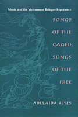

Viewing the Vietnamese refugee experience through its music
Viewing the Vietnamese refugee experience through its music


 Viewing the Vietnamese refugee experience through its music
Viewing the Vietnamese refugee experience through its music

|  |
Songs of the Caged, Songs of the FreeMusic and the Vietnamese Refugee ExperienceAdelaida Reyespaper EAN: 978-1-56639-686-8 (ISBN: 1-56639-686-7) |
Book Award from the U.S. Branch of the International Association for the Study of Popular Music, 2000
"This is a ground-breaking book, long overdue in the telling. Adelaida Reyes's study is a testament to the importance of firsthand ethnographic work, addressing big issues.... Reyes argues that music-making is central to the ongoing construction of differences within Vietnamese-American communities and she demonstrates that music, particularly singing, looks back nostalgically to pre-1975 Vietnam as well as forward to new Vietnamese American identities."
—Deborah Wong, University of California, Riverside
The Vietnamese refugee experience calls attention to issues commonly raised by migration: the redefinition of group relations, the reformulation of identity, and the reconstruction of social and musical life in resettlement. Fifteen years ago, Adelaida Reyes began doing fieldwork on the musical activities of Vietnamese refugees. She entered the emotion-driven world of forced migrants through expressive culture, learned to see the lives of refugee-resettlers through the music they made and enjoyed, and, in turn, gained a deeper understanding of their music through knowledge of their lives.
In Songs of the Caged, Songs of the Free, Reyes brings history, politics, and decades of research to her study of four resettlement communities, including refugee centers in Palawan and Bataan, the early refugee community in New Jersey, and the largest of all Vietnamese communities—Little Saigon, in southern California's Orange County.
Looking closely at diasporic Vietnamese in each location, Reyes demonstrates that expressive culture provides a valuable window into the refugee experience. Showing that Vietnamese immigrants deal with more than simply a new country and culture in these communities, Reyes considers such issues as ethnicity, socio-economic class, and differing generations. She considers in her study music of all kinds—performed and recorded, public and private—and looks at music as listened to and performed by all age groups, including church music, club music, and music used in cultural festivals. Moving from traditional folk music to elite and modern music and from the recording industry to pirated tapes, Reyes looks at how Vietnamese in exile struggled, in different ways, to hold onto a part of their home culture and to assimilate into their new, most frequently American, culture.
Songs of the Caged, Songs of the Free will attract the attention of readers in Asian-American studies, Asian studies, immigration studies, music, and ethnomusicology.
Excerpt available at www.temple.edu/tempress
"...an incisive study of Vietnamese and their music-making as refugees in the US....a nuanced ethno-musicological study..."
—American Studies
"...excels as an ethnographic study of the emergent meanings of music of Vietnamese communities in different social contexts. It is also a good example of how to conceptualize human experiences in and through music."
—Asian Music
Read a review on Anthropology Review Database, Jan 2003, written by David W. Haines.
Read a review from Ethnomusicology, Spring/Summer 2002, written by Barbara B. Smith (pdf).
Read a review from Journal of Asian Studies, Volume 20.3 (Summer 2001), written by Mercedes M. Dujunco (pdf).
List of Illustrations
Preface
Acknowledgments
Introduction
Part I
1. The Journey
2. Prologue
3. First Asylum: The Camp in Palawan, Philippines
4. Springboard to Resettlement: The Refugee Processing Center
Part II
5. Prologue
6. Vietnamese in New Jersey: The Birth of Community
7. Orange County, California, and the Vietnamese
8. Vietnamese Americans in Orange County: The Musical Life
9. Codetta: After Normalization...
Epilogue
Appendix
Notes
References
Index
Adelaida Reyes is a leading ethnomusicologist and Professor Emerita of Music at New Jersey City University. During her years of teaching at Columbia University, she led the development of urban ethnomusicology as a field of study.
Asian American Studies
Music and Dance
© 2015 Temple University. All Rights Reserved. This page: http://www.temple.edu/tempress/titles/1426_reg.html.